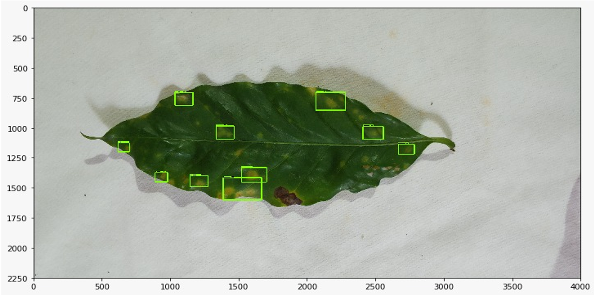
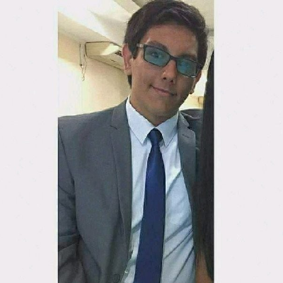
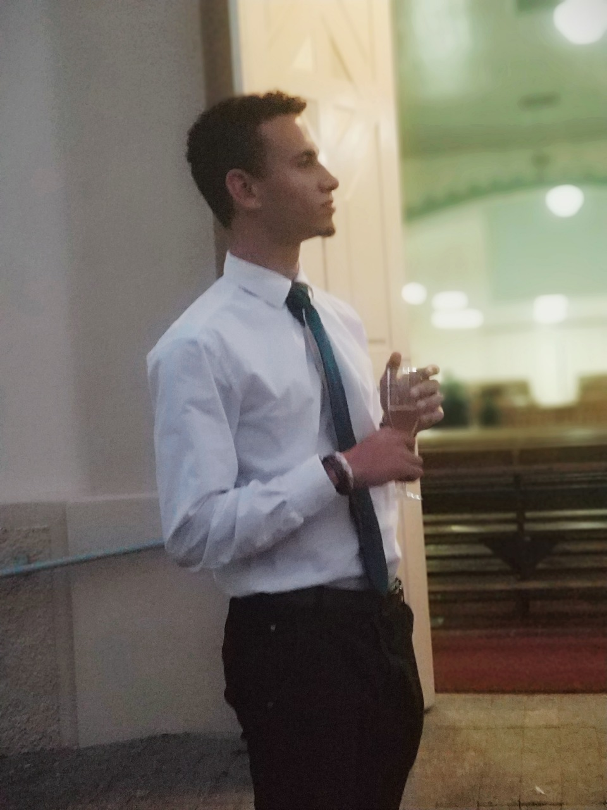

Coffe Recognition
,

Recognition of disease in coffee leaf
Graduation Final Work
Initiated in 2019, this project uses technologies such as machine learning, cnn, opencv, computer vision and
artificial intelligence to contribute to the work of coffee leaf samplers, who have an arduous work to collect
samples and identify the diseases present in the leaf .
Creators

Alvaro Leandro

Lucas Brito